Diagramming as Code
 |
Carl Chesser
@che55er | che55er.io |
graphviz
License: Common Public License Version 1.0
digraph G {
rankdir="LR"
db[shape="cylinder"];
a -> b -> db;
b -> c -> db;
}
Mermaid
Generation of diagrams like flowcharts or sequence diagrams from text in a similar manner as markdownüìÑ License: MIT
✨ Popular ✨
Mermaid Example
flowchart LR
a --> b --> id1[(d)]
b --> c
c --> id1[(d)]
%%{init: {'theme': 'dark', 'themeVariables': { 'darkMode': true }}}%%
flowchart LR
a --> b --> id1[(d)]
b --> c
c --> id1[(d)]
Mermaid
Support for many different types of diagrams.
ü™Ñ
Mermaid Integrations
| VSCode | GitHub |

|
Mermaid
Even understood by generative systems (ChatGPT).
Diagrams
üêç Python packageüìÑ License: Mozilla
üîå Utilizes graphviz
Diagrams
from diagrams import Diagram
from diagrams.aws.compute import EC2
from diagrams.aws.database import RDS
from diagrams.aws.network import ELB
with diagrams.Diagram("services"):
b_service = EC2("b")
db = RDS("db")
ELB("a") >> b_service >> db
b_service >> EC2("c") >> db
Diagrams
Large inventory of iconography.
D2
üìÑ License: MozillaD2 - Example
direction: right
a -> b -> db
b -> c -> db
db.shape: cylinder

D2
Different styles with animated flows!
draw.io
‚úèÔ∏è Some visuals need manual manipulation.ü뮂Äçüíª Can use draw.io Desktop + source control changes.
üìÑ License: Apache License 2.0
draw.io - Advanced Imports
You can import diagrams through text and then edit!✅
Recap
- graphviz
- Mermaid
- Diagrams
- D2
- draw.io
Thank you! üéâ
Carl Chesser@che55er | che55er.io